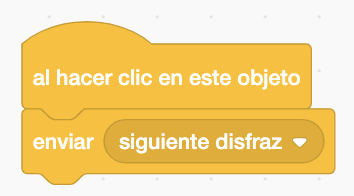
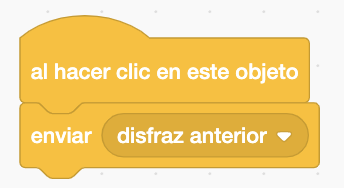
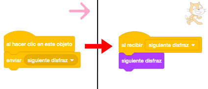
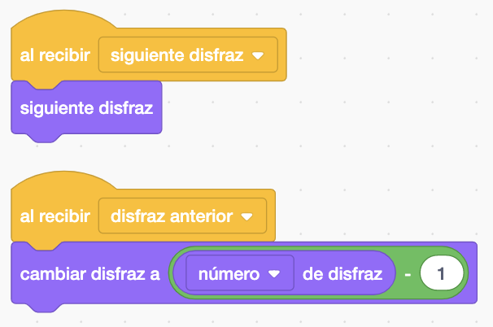
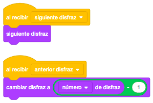
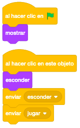
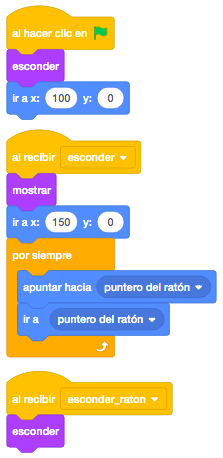
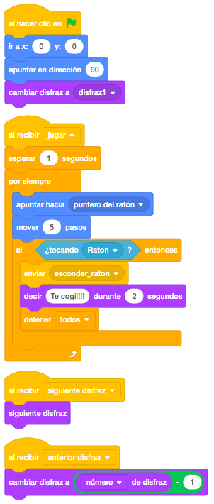
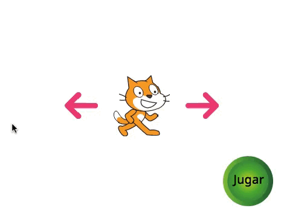

Necesitamos mínimo cuatro objetos distintos para seleccionar el personaje de juego y un ratón que será el que intente escaparse de nuestro personaje. Los elegiremos de la biblioteca de Scratch. También buscaremos en la biblioteca una flecha a la derecha, otra a la izquierda y un botón de inicio del juego.
No necesitamos ningún escenario.
El juego consiste en seleccionar el personaje mediante las flechas de entre los que nos aparecerán y al
pinchar en el botón empezará el juego en el que nuestro personaje tendrá que perseguir al ratón.
Primero, añadimos los cuatro personajes y tenemos que agruparlos en uno solo. Para ello, copiamos un disfraz
de cada objeto al primer objeto. Una vez hecho esto, borramos los objetos que sobren, quedándonos con el
objeto que tiene todos los disfraces.

Al objeto botón le pondremos el texto "Jugar" en el medio.

Lo primero, como siempre, será posicionar todos los objetos que aparecerán al empezar el juego. En el centro el personaje con los 4 disfraces (con el disfraz que queramos que empiece el juego, y a cada lado la flecha a la derecha y la flecha a la izquierda. El botón de jugar lo pondremos en la esquina inferior derecha, por ejemplo.

Si pinchamos en la flecha derecha, cambiaremos el disfraz del personaje hacia adelante y si lo hacemos en la
flecha izquierda, lo hará hacia atrás.
Para que desde un objeto podamos interactuar con otro objeto, lo podemos hacer enviando "Mensajes". Si un
objeto envía un mensaje "X", todo objeto que tenga el bloque de control "Al Recibir X" ejecutará la pila
de bloques que tenga asociada esta etiqueta.
Por ejemplo, si al pinchar en la flecha a la derecha enviamos el mensaje "Siguiente Disfraz" y en el
personaje tenemos el bloque de control "Al Recibir Siguiente Disfraz", ejecutará todo lo que tengamos
asociado a ese bloque.

Para cambiar el disfraz hacia adelante enviaremos el mensaje "Siguiente Disfraz" desde la flecha derecha y
para cambiar el disfraz hacia atrás enviaremos el mensaje "Anterior Disfraz" desde la flecha izquierda.
El código en las flechas quedaría así.

En nuestro objeto tendremos que poner dos bloques de control "Al Recibir" uno para recibir el mensaje
"Siguiente Disfraz" y otro para recibir "Anterior Disfraz".
En el mensaje "Siguiente Disfraz" pondremos el bloque "Siguiente Disfraz".
Para el mensaje "Anterior Disfraz" no existe un bloque "Anterior Disfraz", con lo que tendremos que simularlo.

En el botón, al pinchar en el objeto, haremos dos cosas. Primero tendremos que esconder todos los objetos
que sobran cuando empecemos a jugar. Para ello, mandaremos un mensaje "Esconder" y en cada objeto que
queramos esconder, recibiremos el mensaje "Esconder" y pondremos un bloque "Esconder".
También haremos empezar el juego, con lo que enviaremos también otro mensaje "Jugar". Este mensaje lo
recibirá el objeto ratón y más adelante veremos como lo programamos.

En el objeto ratón, al recibir el mensaje "Jugar", posicionaremos el ratón, lo mostraremos y haremos que nos persiga mediante el bloque "Apuntar Hacia" y el bloque "Ir A".

Lo último que nos queda programar será manejar nuestro personaje cuando empiece el juego.
Lo que haremos será dentro de un bloque "Por Siempre", apuntar hacia el puntero del ratón y mover pasos y
controlar que si nos toca el ratón, esconder el ratón mediante un mensaje, mostraremos un mensaje que diga
que nos ha atrapado y detener el juego.
Nuestro personaje quedará de la siguiente manera.

Podemos añadirle al juego vidas de nuestro personaje y una pantalla final de "Game Over"
Y el juego quedaría así.

Para ver el juego terminado pulsa
aquí.
Para descargarte el juego terminado pulsa
aquí.